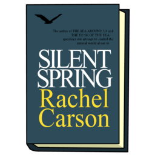

The teacher read a quote to her students from Silent Spring.
“We stand now where two roads diverge.
But unlike the roads in Robert Frost's familiar poem, they are not equally fair.
The other fork of the road — the one less traveled by — offers our last, our only chance to reach a destination that assures the preservation of the earth.” The bell rings and the class is dismissed.

The road we have long been traveling is deceptively easy, a smooth superhighway on which we progress with great speed, but at its end lies disaster.